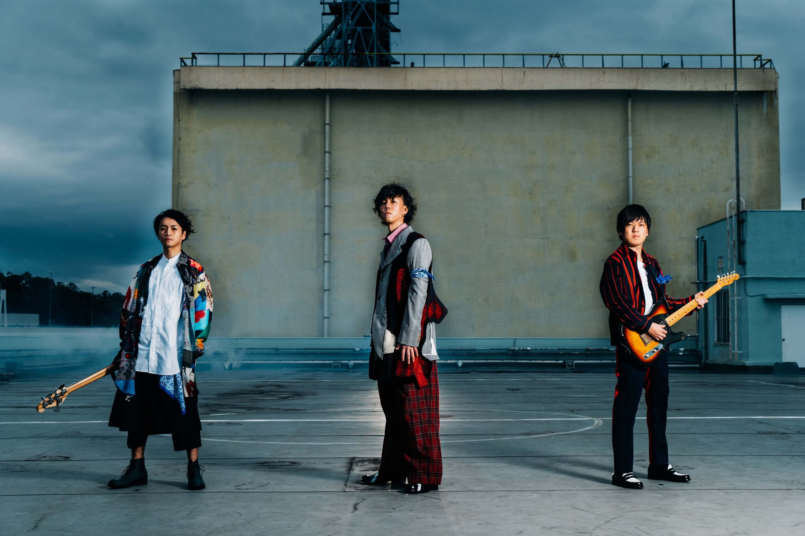

10 Radwimps Songs that Will Shatter Your Heart
by 10 Radwimps Songs that Will Shatter Your Heart
Last Updated - 5 Days Ago

While the four-piece Japanese band Radwimps has been around since 2001 and has achieved commercial success since 2006, they haven’t really broken through the International market in the same way other similar bands like One OK Rock or Bump of Chicken have done (mainly because Radwimps hasn’t done OSTs for internationally acclaimed anime shows yet.)
However, they have consistently placed highly on Oricon’s singles charts and do deserve to be heard overseas, especially since they have a rich treasure trove of intense and emotionally-charged songs on offer. If you need some help with a primer, here are 10 Radwimps songs that will shatter your heart:
This slow song tells the story of a person who lost a loved one, promising to live the rest of his or her life in tribute to the deceased. The person also expresses a desire to be reborn and meet the person in the next life.
10 Taiwanese TV Series too Funny to Miss.
Saddest Lyrics
What should we do in the next world? how about being born and meeting again? That is too tedious so let's not do that, we should be born as one person, Then we would not have to fight, and neither of us will die before the
other Other Things to Note
The video and the lyrics are vague enough that the song leaves a lot open for interpretation, but there are small hints that the lyrics provide. It paints a picture of a relationship that has minor disagreements and misunderstandings, yet they are still happy and in love with each other.
The lyrics also continue Radwimps’ fondness for mentioning food, whether its to liken a concept to the food or just to provide lyrical texture. This time around, it’s sweets such as shortcake and chocolate.
Kanashi is about feeling guilty because a loved one always gives way and puts your needs over his or hers, even if there are times when you have done things that make you undeserving of such kindness.
Saddest Lyrics
You cried, you really did cry As your heart screamed: "cry" I pray and hope You won't hate me You loved me, you loved people so much that your heart withered
Other Things to Note
Kanashi is so heartbreaking not just because of the lyrics, but because of the effect of Yojiro Noda’s lilting voice, which shifts seamlessly between soft almost-spoken words and falsetto. The bridge mixes things up a beat by bringing on the distorted guitars and the pounding drums, before shifting back to a soft verse – lather, rinse, and repeat.
While Radwimps’ lyrics tend to be vague and open to interpretation, Mr. September has a few lines that point to the song as being about two people who have to part ways.
Click here and understand why Ohno is the perfect leader for Arashi.
Saddest Lyrics
The wet sky has taken on dry colours, Father is definitely searching At that time, one stands alone and waits achingly for September
Other Things to Note
The title anthropomorphizes the month of September with the use of the honorific “-san,” which is the rough equivalent of “Mister” in the west, but the verse lyrics refer to September properly as a month.
It is also possible that the song is not talking about the actual month of September, but Autumn, which serves as the transitional period between Summer and Winter, which are also mentioned in the lyrics. Everything may be an allegory for specific periods in a relationship, summer being the peak, and winter being the coldness one feels when apart.
Yumemitsuki ni Nani Omofu is a torch song sung by someone who’s optimistic that he’ll get to meet his or her loved one again.
Saddest Lyrics
If I could go back to my youth, and hope for your stupidity All these words and meetings till now will be my shame and I’ll blame nothing but time.
Other Things to Note
This song is a little bit more upbeat than Radwimps’ usual fare, both in terms of melody and the lyrics. While the verse does point to some regrets over the past, the rest of the lyrics seem hopeful that they will meet again and rekindle all the positive things they enjoyed before.
It’s not made clear in the lyrics why they’re apart. It could be anything from breaking up to just simply being in different physical locations.
Saigo no Uta is most likely a song from someone who’s been left behind, and while sad at the fact that he’s alone, is still thankful that he’s still alive.
Saddest Lyrics
The lives that have disappeared, Someday I will pass away too. Until that day, the fact that I’m blessed now is called the fact that I’m living now
Other Things to Note
Despite the fact that the song is generally positive (a person left behind chooses to continue living in honor of those passed away), the song is still heartbreaking thanks to the symphonic accompaniment and Yojiro Noda’s trademark singing, which straddles the line between crooning and strained crying.
Gimigimmick tells the story of a person who’s been birthed and experiencing the world for the first time.
Saddest Lyrics
Was it a success? Was it a failure? Though there’s no reason to know. Though I don’t want to know too The voice of that time, my first cries Was it happy? Was it sad?
Other Things to Note
GimiGimmick is sad because it’s an admission that a newborn will be welcomed by a world full of struggles and strife, but it is still one of Radwimps’ hardest-hitting songs, thanks to multiple layers of distorted riffs and a funk beat.
Tojita Hikari seems like it’s a song from someone who has accepted the futility of life, that everything bad and everything good are fleeting; wallowing in despair for failures is as senseless as being proud of every little victory.
Saddest Lyrics
Friends who are born today come to replace friends who have disappeared today Even so, I still feel like I can still laugh tomorrow once more I wonder if the voice I brought will not want to talk about such things And will the dreams I abandoned be happy somewhere?
Other Things to Note
The sad part about Tojita Hikari is not that the person had negative experiences – it’s that he has completely given up on ever appreciating the highs and lows of life. It’s a very nihilistic point of view.
Oreshoku Sky is about people who put on a cheerful face and try to remain positive, even though they’re lonely or hurting inside.
Saddest Lyrics
People are flashes of light which would disappear one day Hence we are afraid of the dark; we produce light; and let the stars disappear, however Don’t know why but, where have the stars gone to? When it turns into night, I’ll try searching for the stars’ footprints
Other Things to Note
If you don’t pay much attention to the lyrics, the song sounds happy and inspiring due to the upbeat melody and the prevalence of cymbal crashes, but the lyrics perfectly encapsulate the song: it’s about feelings of pain and loneliness being bottled up just to get through the day.
Chains of Sorrow focuses on the futility of life, by outlining that things being protected today will be destroyed tomorrow and that promises made yesterday could be broken as well.
Saddest Lyrics
Even if I was protecting something yesterday Tomorrow it would be destroyed Even if was a promise we made just yesterday Tomorrow it would be broken
Other Things to Note
The lyrics are the usual Radwimps’ MO: philosophical musings on the hardships of life. What makes this song unique is in the sound – it shows that Yojiro Noda has decent English. It’s not native-sounding but it’s not engrish either. The song also shows that he has rapping skills.
A song that seems to follow a spirit about to be born, as he is asked by someone (probably the maker) on who or what he wants to become.
Saddest Lyrics
By the way, There's just one more thing should I add "tears" as an option? Even without it, there is no impediment, but some people don't add it, because it's a pain. What will you do?" And then, I asked a for it.
Other Things to Note
Order Made is easily one of Radwimps’ deepest and most powerful songs, not just in terms of how it sounds, but also in the story it tells. The choices the subject makes while being asked for input point to someone who values kindness over strength, and one who is willing to experience love even if he knows that it will result in the pain of loss.
The music video for the song is also worth watching, as it tells the story so closely and will tear at your heartstrings, thanks to some good performance from the actors involved.
Leave a Comment:
Search
Advertisement